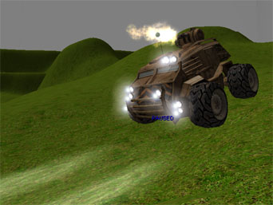

UDN
Search public documentation:
KarmaCars
Interested in the Unreal Engine?
Visit the Unreal Technology site.
Looking for jobs and company info?
Check out the Epic games site.
Questions about support via UDN?
Contact the UDN Staff
Karma Cars
Last updated by Chris Linder (DemiurgeStudios?), to finalize first draft. Original author was Chris Linder (DemiurgeStudios?).Introduction
This document provides code and instructions to easily drop Karma Cars (any 4 wheeled vehicle with any sort of drive train) into your game. This document also goes over how to customize the cars using parameters in Unrealed and/or UnrealScript.Setting up the Code
Download the code below and drop it in a UDNBuild. Make sure you add UDNCars to the edit packages in uw.ini and then build the script files. You don't need to change any source code but you might want to consider changing ME_MAX_KARMA_SPEED in Engine/Src/KarmaSuport.h to something larger. This will allow vehicles to go faster. The other solution is to make smaller cars in smaller levels so they look like they are going faster. Either way, once the script is built you are now ready to drop cars in your game.Putting Cars in Your Game
At this point you can open Unrealed drop a Pawn->KVehicle->KCar->GenericCar->Bulldog in any level. Another option is to add a KVehicleFactory->CarFactory that spawns the type of vehicle that you want and set up a trigger for the factory. Once in the game, bind a key to "use" for example, by typing set input e use at the ~ prompt. Now you can get in the vehicle pressing the "use" key at either door. Press "jump" to get out. The "use" key will also flip the vehicle if it is upside-down and you are outside of it. Now drive around and have fun! (You can pick up a fun vehicle test map in download section.)The classes
KCar.uc
KCar extends KVehicle directly and is the root car class. This class contains almost all of the physics and karma info and defines how the car drives. Yet KCars are abstract because they do not have any Karma data and thus can not be dropped in the world. Subclasses must set up their own karma data. KCar contains support for creating all four wheels and setting up their properties correctly to match the tire and suspension properties in KCar. KCar also destroys these wheels when it is destroyed. KCar also insures that if its properties change, it will update the tires as well. Another nice thing about KCar is that is has support for telling if the car is upside-down and flipping the car back over if it is upside-down. And of course is handles all the network replication. If you want to find out more about the about how KCar works please write me at chris@demiurgestudios.com. This document is about putting a 4 wheeled vehicle in your game and customizing it. Consequently, talking about how KCar works doesn't seem to fit in this document because you will, in almost all cases, not be changing KCar.Parameters
The variables are defined on the content creation page here.GenericCar.uc
GenericCar extends KCar and adds the useful functionality almost all games with cars would want. It adds sounds, brake lights, triggers to get in the car, triggers to flip the car back over, messages to the player about how to get in and flip the car etc., wheel dust, and the ability of the car to take damage and be destroyed (doesn't have to happen). Driver pawns are also hidden when they get in the car and unhidden when they get out.Sound
The sound for GenericCar is fairly straight forward. Event based sounds are the easiest. When Destroyed is called the DestroyedSound is played. When KImpact is called the HitSound is played scaled by the velocity of the impact. The engine start sound is played in KDriverEnter which is called on the server when the player gets in the car. Also in KDriverEnter, the AmbientSound of the car is set to IdleSound. In KDriverLeave the AmbientSound is set to NONE. The pitch of AmbientSound is adjusted (as shown below) in Tick to be higher pitched as the wheels spin faster to make the engine sound like it is running faster.// This assume the sound is an idle-ing sound, and increases with pitch // as wheels speed up. EnginePitch = 64 + ((WheelSpinSpeed/EnginePitchScale) * (255-64)); SoundPitch = FClamp(EnginePitch, 0, 254);The SquealSound is turned on only when the slip of the rear tires is greater than the SquealVelThresh. The squeal sounds is played by setting the AmbientSound of the left rear tire. For more realistic simulations it might be better to calculate the slip per tire and play the slip sounds on each of the tires as they slip.
Brake Lights
The brake lights for GenericCar are pretty simple. In Tick the material with index 1, Skins[1], is set to either ReverseMaterial, BrakeMaterial, or TailOffMaterial based on Gear and OutputBrake two variables from KCar.Triggers
The triggers, one on each side for the doors to get in and one large one to flip the car over, are created in PostNetBeginPlay. In net games, they are only created on the server. The triggers are turned "on" and "off" using the SetCollision function.FRTrigger.SetCollision(true, false, false); // On FlipTrigger.SetCollision(false, false, false); // OffIn Tick the triggers are turned on an off based on how fast the car is going (can't trigger if going faster than TriggerSpeedThresh) and if the car is upsidedown (flip, don't get in in). The triggers are destroyed in the car's Destroy function. These triggers are of class CarTrigger which does the actual getting in and flipping.
Messages
(NOTE: Messages currently do not work in the UDNBuild because the ReceiveLocalizedMessage function does not work but the code is in place and should work when ReceiveLocalizedMessage works.) The car messages for Get In, Get Out, Flip Car, and Too Many Cars are stored in CarMessage.uc. These messages are shown to the player by the ReceiveLocalizedMessage function in various places. The Get In, Flip Car messages are sent by the CarTrigger because this class handles both these events. The Get Out message is sent by GenericCar when the player gets in so they will know how to get out. The Too Many Cars is sent by CarFactory because it is responsible for making cars.Wheel Dust
The wheel dust is created in PostNetBeginPlay only on the client with one emitter per wheel. The type of wheel dust that is created is based on WheelDustClass which must be a subclass of WheelDust which extends Emitter but adds the ability to change the rate of the emitters based on how much the wheels are slipping. WheelDust assumes two emitters (often a sprite for dust and a mesh for debris). When making these emitters make sure they have the properties:AutomaticInitialSpawning=False InitialParticlesPerSecond=0 ParticlesPersecond=0 RespawnDeadParticles=false SecondsBeforeInactive=0or else the rates will not be controlled correctly. The rates of the dust are set in Tick
Damage
Damage is mostly straight forward. When the TakeDamage function is called, the car takes the amount of damage passes in and takes a KImpulse equal to the momentum passed in at the hit location. If the car has no health after the damage is dealt it is considered dead and player is either ejected from the car or killed based on the value of bCarDeathKillsPlayer. The tricky part about damage is when it can be dealt. The car cannot die is the middle of a Karma function such as KImpact or else the game crashes. To deal with this, the damage that should be dealt is saved in QueueDamage and then dealt in Tick. Another difficult part about using KImpact is that for every "impact", KImpact is called many times. To avoid taking excess damage and also to avoid playing the impact sound too many times, the variable UntilNextImpact is used. This is the minimum time until the next time the car can take damage. It is set to the length of HitSound on every impact and then counted down in Tick.Driver Hiding
The driver hiding is very simple. In KDriverEnter the pawn that gets in has bHidden set to true. In KDriverLeave the pawn that is "in" the car, Driver, has bHidden set to false. If you didn't want the driver to be hidden you might want set the location of the driver (so everything lines up right) and then play an animation of him or her getting in the car. You can use the FreezeAnimAt(FrameNumber) function to stop the animation at the correct place, for example when the driver is in the seat.Parameters
The variables are defined on the content creation page here.Bulldog.uc

Bulldog extends GenericCar and adds headlights and a weapon. The headlights turn on when a player gets in the Bulldog and turn off when he or she gets out. The weapon fires a projectile, in this case a grenade, at a constant angle relative to the vehicle when the player presses fire.